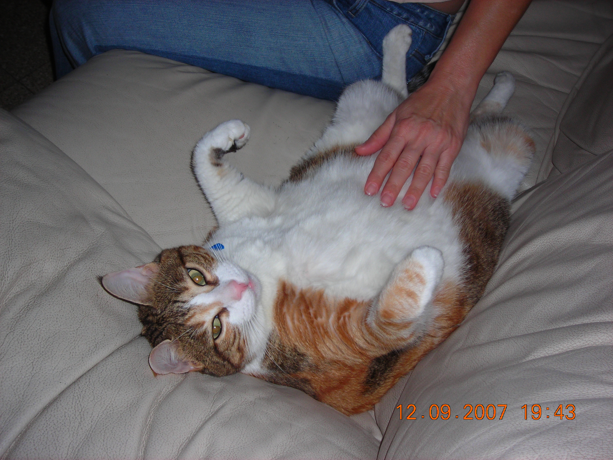

one day the girl went to sleep as usual and that night her cat bit her nose but the girl didnt wake up because of that.
after that night she woke up in the morning and looked in the mirror
and saw her injured nose and screamed.she thought to herself how is she going to go to
school looking like that.
